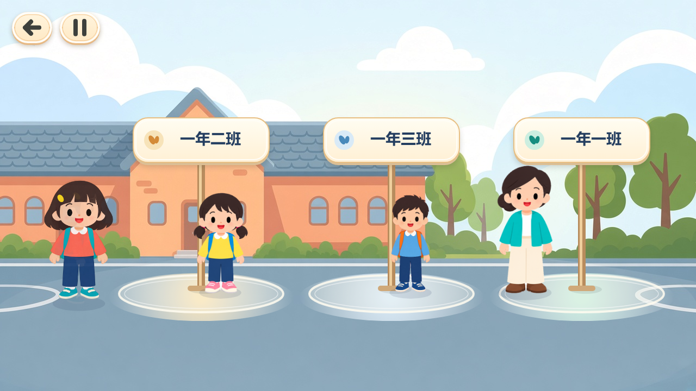

《小禾的校园安全日》
游戏项目与玩法说明
这是一款面向小学低年级儿童的校园安全教育网页互动游戏，也是毕业设计项目。以角色“小禾”的校园经历串联五个安全情境，使用明亮的绘本卡通画面、简单的点击与拖动操作、动画及语音反馈，帮助儿童辨识安全行为。
进入游戏体验 · 直接查看第五关
五个关卡
| 关卡 | 主要交互 | 安全知识 |
|---|
| 1. 走廊慢慢走 | 控制小禾在走廊前进，处理积水等行走情境。 | 慢慢走，注意观察，绕开积水。 |
| 2. 楼梯扶扶手 | 点击扶手、按台阶引导逐级下楼，遇到前方同学时等待。 | 扶扶手、看台阶、一级一级走，不推不挤。 |
| 3. 门口陌生人 | 面对“妈妈让我来接你”的说法，在“跟他走”“找老师”“站原地”之间选择；错误选择展示后果并重试。 | 不直接跟陌生人走，留在校园内，找老师确认。 |
| 4. 教室找隐患 | 两轮校园找物：点击教室的水杯、剪刀、书包及图书室的书本、积水、出口杂物，查看放大讲解。 | 物品放稳放好，尖锐物品妥善收纳，保持通道与出口畅通。 |
| 5. 安全集合小任务 | 看绿色疏散指示选路线；遇到同学停下时选择等待；拒绝返回拿水杯；找一年一班集合点；举手报到。 | 沿指示有序前进，不推挤、不返回拿物；到本班集合，听老师指挥，不独自离开。 |
第五关的交互设计
第五关采用分阶段选择与动作反馈。路线方向、选项位置和班级集合点的位置会变化；选错后只重试当前步骤，连续出错会增强视觉提示。不设置抢跑倒计时。三名儿童分别使用连续走路动画，小禾按实际移动方向行走，并完成站立抬手报到。语音采用用户提供的 Anna Su 配音，关键安全反馈与总结播放完毕后才能继续。

第五关“选择本班集合点”的实际游戏画面。整体界面与体验
游戏提供首页、顺序解锁的关卡选择、暂停、返回与设置。设置包含声音开关、录音与系统朗读切换、字体大小调整。完成情况和设置保存在体验者自己的浏览器本地。首次播放声音需要点击页面；建议使用横屏浏览器体验。
浏览器代理交互支持
游戏已提供可访问的 HTML 按钮，并通过 document.modelContext 在支持 WebMCP 的浏览器代理环境中注册状态读取、坐标点击、拖动和按键四项工具。工具沿用原有操作规则，不直接修改通关结果。也可通过 window.xiaoheAgent 读取当前状态和执行同类输入。
这些功能只提供网页侧接口，不会给普通聊天模型安装浏览器、截图或电脑操作权限。若希望 GPT 实际体验游戏，请使用具备浏览器代理交互能力的环境；仅支持网页文本搜索的对话可阅读本说明页。首次播放声音仍需浏览器允许用户交互。
论文引用时的说明
本页描述的是当前项目的设计目标与已实现机制，不是儿童学习成效或可用性实验的结论。教育效果、样本数量、量表结果、访谈与统计数据需要作者实际研究获得，不能从游戏界面推定或虚构。
部分图像与动作素材采用 AI 生成并经过项目内调整，语音由用户提供。本页可供只支持网页阅读、不能操作 Canvas 游戏的工具理解项目；实际动作和交互应结合游戏体验核对。
当前公开版本：2026年11月2日。此说明页随游戏一同发布。